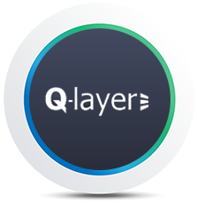
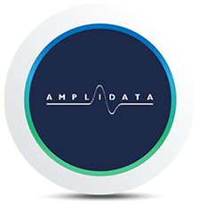

Built on values
ThreeFold is not about a team, it is about a movement. Our development process is open to contributions from anybody. We invite you to participate in our Forum and Github Watch Video
ThreeFold is not about a team, it is about a movement. Our development process is open to contributions from anybody. We invite you to participate in our Forum and Github Watch Video
We are collectively growing a sustainable peer-to-peer internet that is available everywhere and can be owned by everyone – across geographical and cultural borders, empowering people to be autonomous, and providing equal chances to learn, partake and succeed.
Equality is the foundation for a fair world where everyone is given the opportunity to be empowered and to achieve their full potential.
The current approach of many governments and countries is to cut the internet into pieces by limiting its accessibility and enforcing regulations. We need an internet that provides freedom and fair authorship for content and data.
We all need to reduce our energy footprint NOW. The ThreeFold Grid is designed in a way to drastically reduce the global internet’s energy consumption.

Kristof is a motivated entrepreneur, having founded more than 10 companies (6 sold) in storage, automation, and cloud computing. More importantly, though, he is a humanist – passionate to help make the world a better place through building technology for all to use.
Reem believes that technology is the key to making the world a little bit better and greener. So after studying Digital Media Engineering Technology and Computer Science she joined ThreeFold in the pursuit of making the world a nicer place through lines of code.
Originating out of Zimbabwe, Chris is passionate about seeing Africa transform into a world-first digital economy. For him, the macroeconomic and social impact ThreeFold can impart within emerging markets is unprecedented and can revolutionize many sectors & uplift nations.
Sam believes in following momentum, & momentum led him to ThreeFold. "The movement represents a new frontier, a new mindset, and a better, more fair & honest way forward. We have the opportunity & ability to have great, positive, and widespread impact on the world."

Sabrina is a firm believer in equality and fairness. She believes that everyone should be treated the same, regardless of where you were born, where you live or who you are. Everyone should be given the same opportunities in life, and with ThreeFold we can help reach that goal by creating a digital world without borders nor geographical discrimination.
For Weynand, the Internet is where the next generation will expand their minds and innovate. He experienced this first-hand when his son outsmarted him by learning online how to boil an egg in a microwave. Such learning ability should be available globally, sustainably and efficiently.
Some early ThreeFold developers have been on a journey together with Incubaid over the past two decades, building parts of the cloud we use today and achieving more than 500 million USD in exits. After many years in the industry, they realized that a new internet architecture was needed to bring positive change to our world. So, they set the foundation for what would later become the ThreeFold Movement.
Data reduction and capacity
optimization software for
disk-based backup.
Acquired byVeritas
Managed dedicated hosting
services for complex internet
infrastructures.
Acquired byTerremark + verizon
Belgium's largests hosting company
and pioneer in virtual
private
servers and first cloud.
Acquired byTelenet
Automation of cloud
computing deployment, full
data center
virtualization.
Acquired bySun Microsystems

Object storage software
for public and private
cloud data
centers.
Acquired byHGST (western digital)
